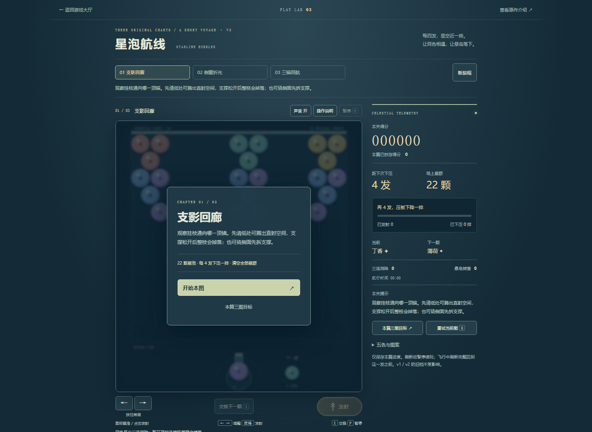
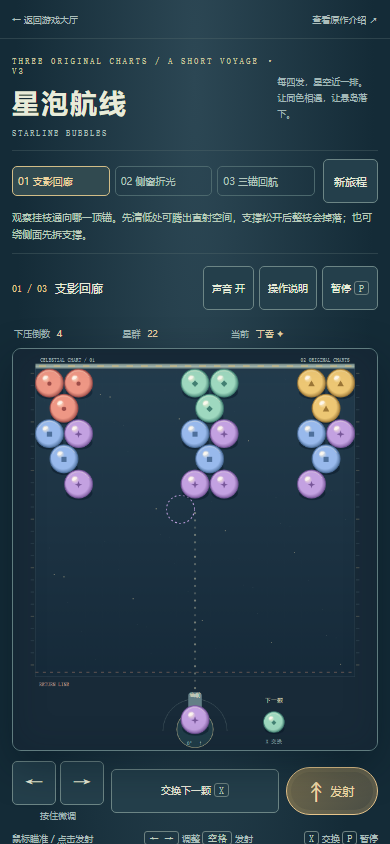
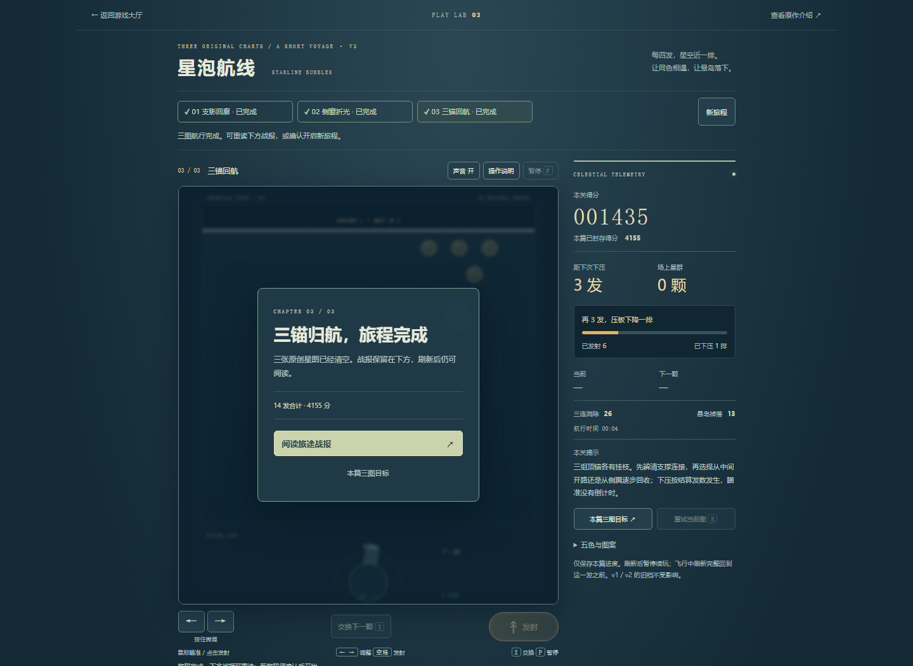

2026-10-23 UTC，本地 Chromium 普通鼠标/键盘/触控模拟。三张原创布局顺序清场；原 v1 十二图和 v2 两图保留。目录仍45项。新篇是有限机制候选，未完成人工品质验收。
| 图 | 实际决策与辅助流程 |
|---|---|
| 支影回廊 | 先从侧面反弹清低枝，再拆顶锚；4发，1次反弹。模型另有先拆支撑路线。 |
| 侧窗折光 | 先换色从侧窗反弹清遮挡，再拆支撑；4发，2次反弹。模型另有先左锚、后内侧直射路线。 |
| 三锚回航 | 先清左侧开路拆锚、再回收右侧；6发，第4发后下压1排。模型另有先清两翼低枝的顺序。 |
用既有弹道模型生成角度方案，再通过页面正常指针瞄准、发射及换色执行；只读诊断用于观察，没有写入角度、时间、胜负或完成档。辅助实际各图交互约3.61/3.77/4.28秒，未计阅读和推理，不据此宣称深度或适合所有玩家。模型六条路线按1/120秒与50ms更新和±0.001弧度扰动均可解；每图1002组初始一发采样无直接清场，不是穷尽证明。
刻意连续向中央发射8发，自然触底失利，刷新仍是失利且不重复计次；重试回首图初始局面。正常三图分别封存，活动第二图刷新准确保留棋盘与第一图结果；每次关间刷新不重复结算。第三图真实完成档已私下保留，终态刷新仍有3条战报；阅读战报获得焦点。取消新旅程保留完整档，确认后回第一图且旧 v2 实际游玩档原字节不变。
飞行中实际刷新回到完整出手前并暂停，发数/颜色/下压倒数不推进。键盘瞄准、暂停/继续通过。390 CSS真实浏览器触控模拟：拖动只瞄准、点发射才出球，方向长按取消清输入，暂停恢复可用；截图人工检查无横向溢出，主控至少44px。手机尺寸模拟不能替代真机。
独立故障夹具：配额写失败保留旧值并显示风险，恢复写入清警告；坏档保全禁止覆盖；读取禁用及无AudioContext仍可临时开始。故障夹具与上面的正常输入通关分开，不声称真实设备存储故障。既有声音沿用，未做听感验收。
边界：已知解很短，部分支撑射线窄；最窄模型替代路线窗口约0.004弧度。UI完成采用已知角度，不能证明盲解容错、真人乐趣、真实手机表现或整体精品品质。不修改速度、消除/下压数值来制造通过。早期测试适配器的异步等待与选择器转义错误已修正，未据此修改玩法。


